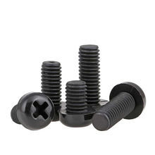

Механика
Винт M3×25, нейлон, чёрный
Это машинный винт M3×25 из нейлона, чёрного цвета. Используется для лёгкого крепежа там, где важны электроизоляция, малый вес и отсутствие коррозии.

Документация
RS: нейлоновый машинный винт M3×25 (техническое описание)RS: набор нейлонового метрического крепежа с M3×25
Характеристики
Тип
машинный винт
Резьба
M3
Длина
25 мм
Материал
нейлон (полиамид)
Цвет
чёрный
Назначение
лёгкий крепёж для корпусных и электронных сборок
Электроизоляция
да
Коррозионная стойкость
высокая
Масса
очень малая
Магнитные свойства
не магнитится
Подробнее
Нейлоновый винт M3×25 обычно применяют в электронике, 3D-печатных узлах, корпусных сборках и других местах, где металлический крепёж нежелателен. Чёрный цвет чаще встречается у изделий из нейлона с добавками красителя; на основные размеры он не влияет. Нейлон не проводит электричество и не ржавеет, но имеет меньшую прочность и термостойкость, чем металлические винты. Для такой позиции обычно указывают метрическую резьбу M3 и длину 25 мм. Это типовой крепёж общего назначения, без специализированной головки/шлица в самой формулировке позиции.
hw-2026-025